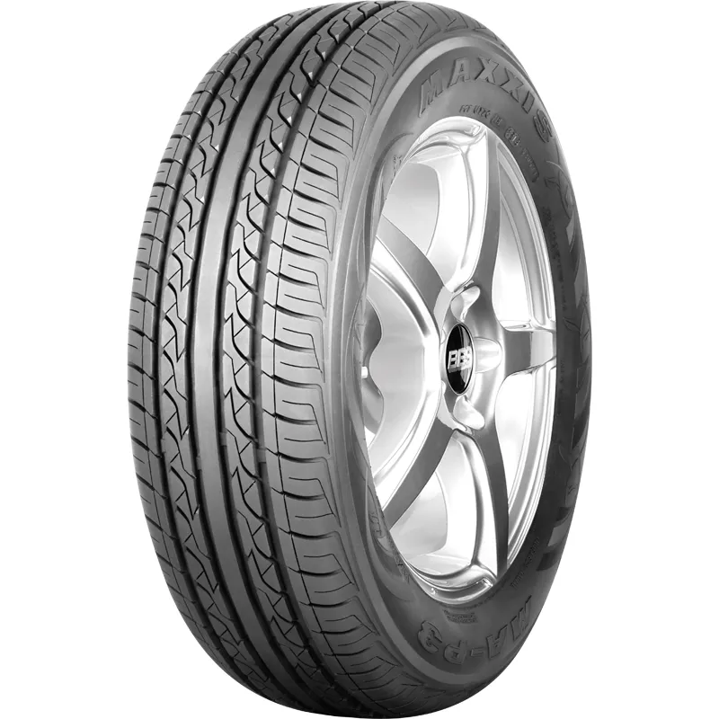

Maxxis MA-P3 175/65R14

RM 145.00
MAXXIS MA-P3 – 175/65R14 82H. A premium touring tyre designed for passenger cars, offering excellent wet-road traction, responsive handling and a quiet, comfortable ride. Its closed shoulder tread design helps reduce road noise, while four circumferential grooves improve water evacuation and wet braking performance. A solid centre rib enhances steering stability, and the low rolling resistance compound supports better fuel efficiency and longer tread life. Ideal for comfortable and reliable everyday driving.
Klang Hock Li Tyre Services Sdn Bhd, Klang, Selangor, Malaysia.
View live product details and enquire